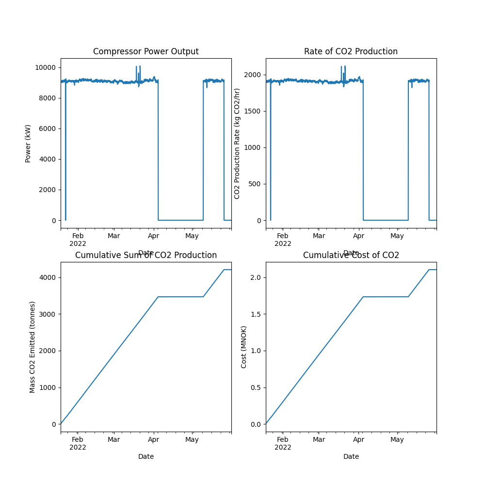

Note
Go to the end to download the full example code.
Cumulative CO2 Production and Cost
Given the power consumption of a process unit and data regarding the emissions and cost factors, we can work out the total amount of CO2 produced and the cost associated with that. Here is an example using the power used by a gas compressor at the Valhall platform.
import os
import matplotlib.pyplot as plt
import pandas as pd
from indsl.sustainability.co2_emissions_calculations import (
cumulative_co2_cost,
cumulative_co2_production,
rate_of_emissions,
)
# Load and pre-process data
base_path = os.path.dirname("")
data = pd.read_csv(os.path.join(base_path, "../../datasets/data/compressor_power_output.csv"), index_col=0)
data.index = pd.to_datetime(data.index)
power = data[data.columns[0]].resample("1h").mean().ffill() # Unit is in kW
# Specify factors
co2_cost_factor = 0.5 # NOK/kg CO2
emissions_factor = 0.21 # kg CO2/kWh
# Perform emissions calculations
rate_co2_produced = rate_of_emissions(power, emissions_factor)
co2_produced = cumulative_co2_production(rate_co2_produced, start_date=data.index[0])
co2_cost = cumulative_co2_cost(
power, co2_cost_factor=co2_cost_factor, emissions_factor=emissions_factor, start_date=data.index[0]
)
# Plotting
plt.subplots(2, 2, figsize=(10, 10))
ax = plt.subplot(2, 2, 1)
(power).plot(ax=ax)
plt.ylabel("Power (kW)")
plt.xlabel("Date")
plt.title("Compressor Power Output")
ax = plt.subplot(2, 2, 2)
(rate_co2_produced).plot(ax=ax)
plt.ylabel("CO2 Production Rate (kg CO2/hr)")
plt.xlabel("Date")
plt.title("Rate of CO2 Production")
ax = plt.subplot(2, 2, 3)
(co2_produced / 1000).plot(ax=ax)
plt.ylabel("Mass CO2 Emitted (tonnes)")
plt.xlabel("Date")
plt.title("Cumulative Sum of CO2 Production")
ax = plt.subplot(2, 2, 4)
(co2_cost / 1e6).plot(ax=ax)
plt.ylabel("Cost (MNOK)")
plt.xlabel("Date")
plt.title("Cumulative Cost of CO2")
plt.show()
Total running time of the script: (0 minutes 0.522 seconds)